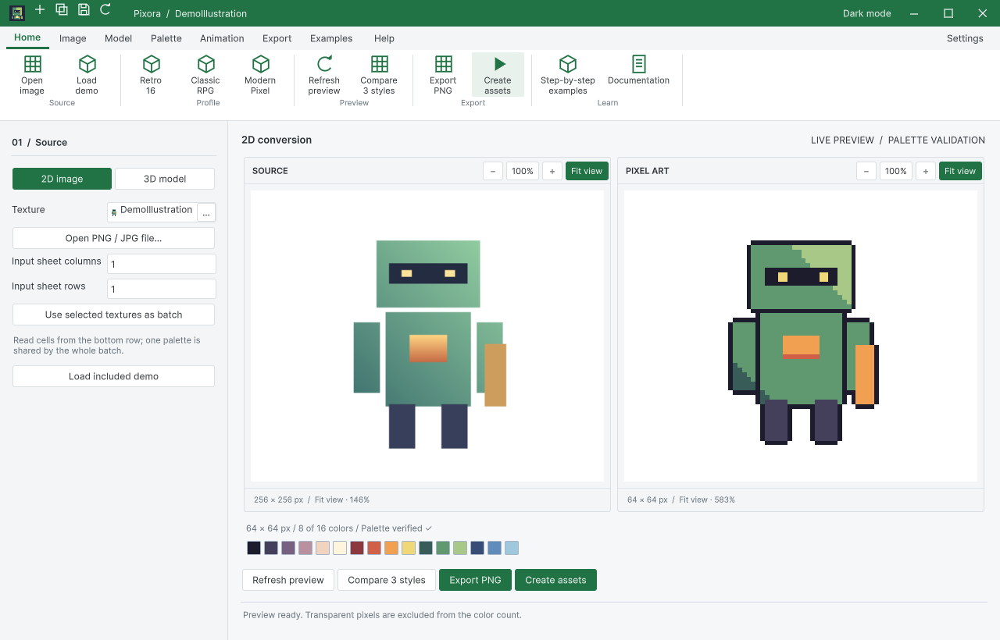
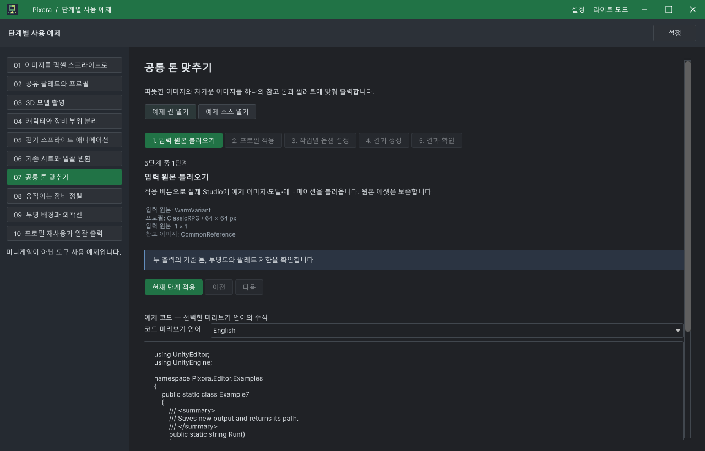
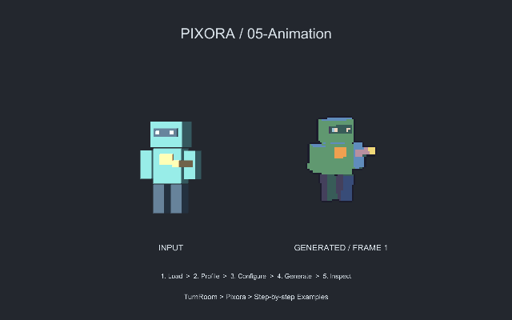

Tracefolio REPORTS & ISSUES
Tracefolio REPORTS & ISSUESPixora 사용 예제 10개 구성과 실제 Unity 전체 QA
완료열 가지 단계별 작업 예제와 저장된 씬을 완성했습니다. 실제 마우스 90회, 씬 10개 Play 실행, 다중 창·출력·단독 설치 QA를 수행하고 발견한 UI 결함을 수정했습니다.
작업 결과
10개 샘플 씬·단계별 생성·예제 코드·실제 스프라이트 애니메이션 구성과 Windows Unity 실행 검증을 완료했습니다. 수정 사항과 증거는 TurnRoom 작업 브랜치 e34c4de3에 푸시했습니다.

변경 내용
적용 내용
| 예제 | 입력·작업 | 저장된 결과와 씬 |
|---|---|---|
| 01 Image | 이미지 → 프로필 → PNG | 32×32 Sprite |
| 02 Palette | 공유 팔레트 적용 | 같은 RGB 집합의 결과 |
| 03 Model | 3D 모델 고정 프레임 | 모델 픽셀 미리보기 |
| 04 Parts | 장비·Renderer 분리 | 같은 카메라·셀·피벗의 부위 출력 |
| 05 Animation | 4방향 × 8프레임 | 32셀 시트·Animator·클립·프리팹 |
| 06 Sheet | 2×2 시트 분할 | 네 프레임 Sprite 애니메이션 |
| 07 Tone | 서로 다른 색조 입력 두 개 | 공통 기준 톤·팔레트 적용 |
| 08 Equipment | 움직이는 장비 4방향 × 4프레임 | 부위별 고정 셀 출력과 애니메이션 |
| 09 Alpha | 흰 배경 이미지 | 키잉·외곽선·투명 Sprite |
| 10 BatchProfile | 정사각형·가로·세로 묶음 | 프로필 JSON 왕복과 공통 시트 |
각 예제는 입력 → 프로필 → 옵션 → 생성 → 확인의 다섯 단계입니다. 실제 Studio 값을 바꾸고 실제 에셋을 만듭니다. 씬에는 입력과 실제 변환 미리보기를 나란히 두었고, 05·06·08은 실제 Animator로 움직입니다. 게임 로직은 넣지 않았습니다.
샘플은 기존 Pixora.Samples.Editor의 Editor 전용·autoReferenced false 격리를 유지합니다. 예제 7–10을 추가했으며 기존 Example1–6의 이름과 GUID를 보존했습니다. 일반 생성은 기존 씬을 보존하고 명시적인 Rebuild Ten Example Scenes만 재생성합니다. 예제 열기는 Additive로 기존 활성 씬을 보존하고 SceneView를 해당 스테이지에 맞춥니다.
9개 언어의 가이드·예제 주석·화면을 갱신했습니다. 원본 데모 10개 파일의 내용과 GUID 보존도 대조했습니다. README의 걷기 이미지는 실제 내보낸 시트에서 다시 만들었습니다.
검증
DataTable QA의 자동 검사·기대/실제·실행 증거 분리 방식을 적용했습니다. 아래 수치는 서로 다른 검사 범위이며 합쳐서 기능 수나 구현율로 표시하지 않습니다.
| 검사 | 실제 결과 |
|---|---|
| 핵심 변환 | 88개 통과 |
| 10개 가이드·실행 예제·주석/언어 | 2,820개 통과 |
| 프레임·장비·톤·팔레트 | 421개 통과 |
| 저장된 씬·출력 픽셀·Sprite·애니메이션 | 761개 통과 |
| 실제 부착된 미리보기 리사이즈/테마/비율/줌 | 72개 경우, 408개 검사 통과 |
| 샘플 포함/제외 프로젝트 | 30개 / 9개 통과 |
| 세션 설정 독립성 | 18개 통과 |
| 배포 씬 참조 | 10개 씬, GUID 참조 475개 해소 |
| 실제 마우스 단계 진행 | 10개 예제, 총 90회 클릭 통과 |
| 실제 Play 모드 | 씬 10개 모두 실행, 05·06·08 Sprite 변경 확인 |
| 혼합 설치 창 전환 | DataTable↔Pixora 8회, Pixora↔Pixora 8회 통과 |
| Pixora 단독 설치 | 새 창·8회 교차 클릭·최소화/복원 통과 |
| 파일 대화상자 | 실제 PNG 저장·취소 및 임포터 7개 속성 통과 |
| 다국어 HTML | 9개 문서·99개 장·90개 코드 예제와 로컬 이미지/언어 이동 통과 |
컴퓨터 조작은 현재 세션에 공식 computer-use 런타임이 없어 대상 창을 제한한 Win32 SendInput/PrintWindow 대체 경로를 사용했습니다. 자동 UI 트리 호출만으로 실제 조작을 대신했다고 보고하지 않습니다. HTML 검사는 Node VM 최소 DOM 검사이며 브라우저 시각 검증과 구분합니다.


실제 네이티브 UI 캡처와 Play 카메라 렌더를 구분했습니다. 이미지 26개는 모두 무손실 WebP 픽셀 일치를 검증했고 최대 85,876바이트입니다.
검증 범위 요약 · 실제 단계 조작 · Play 실행 결과 · 씬 품질 검사 · 미리보기 검사 · 이미지 압축 검증
남은 사항
Windows / Unity 6000.0.83f1 / Built-in에서 확인했습니다. 다른 운영체제·렌더 파이프라인·고DPI와 모든 외부 모델·셰이더 호환은 미확인입니다. DataTable 제품 소스는 수정하지 않았으며, 이전 작업에서 남은 DataTable 역사적 문서 캡처/소스 해시 불일치 206건은 이번에 통과 처리하지 않았습니다. 제품 브랜치는 codex/turnroom-integration이며 main 병합이나 Asset Store 출시는 수행하지 않았습니다.
작업 시간
- 제안 시간: 90–150분. 샘플 10개 구성, 실제 Unity 조작 QA, 문서·HTML 결과 보고까지를 범위로 제안했습니다.
- 실제로 완료된 시간: 구현·필수 QA·프로젝트 푸시까지 2시간 21분 47초. 시작 2026-10-30 03:42:35 KST, 프로젝트 푸시 완료 2026-10-30 06:04:22 KST. 중앙 보고서 생성·배포는 이후 진행하며 전체 종료 시각은 최종 채팅에 별도로 기록합니다.
- XERJ: 사용 — 실제 XERJ Search로 ApplyTutorialStep·BuildDocumentHeader·WindowShelf 후보를 조회하고 현재 소스와 대조했습니다. 이전 체크아웃 경로를 보던 journal 문제를 저장소 경로 해시별 인덱스로 분리해 복구한 뒤 Index와 FileDialog 검색을 실행했습니다. 자동 watcher 실행은 주장하지 않습니다.